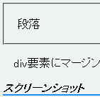

ある要素のマージンに任意の値、border-styleプロパティにnone値を指定したとき、その要素の内部に終了タグを省略した要素を置くと、省略した終了タグが正しい位置に補われずレイアウトを崩す原因になる。
<div style="margin:1px; border:none;"><p>段落</div>
段落
div要素にマージンと border:none; を指定し、子に終了タグを省略したp要素を置いています。
※本来は例示だけを囲むはずのボーダーが、NN4.8では文書末までを囲むように表示されています。
Netscape7.1での表示
NN4.8での表示
NN4.8で不具合の発生を確認しました。